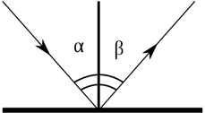
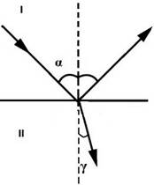
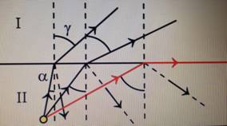

В основе разработки практически всех оптических приборов и систем лежат законы распространения света. Некоторые из них учитывают двойственную природу света, некоторые – нет. Наиболее общие законы распространения света, не связанные с его природой, рассматриваются именно в геометрической оптике. С этими законами вам и предстоит познакомиться на этом уроке.
Геометрическая оптика является самой древней частью оптики как науки.
Геометрическая оптика – это раздел оптики, в котором рассматривают вопросы распространения света в различных оптических системах (линзах, призмах и т. д.) без рассмотрения вопроса о природе света.
Одним из основных понятий в оптике и, в частности, в геометрической оптике, является понятие луча.
Световой луч – линия, вдоль которой распространяется световая энергия.
Световой луч – это пучок света, толщина которого много меньше расстояния, на которое он распространяется. Такое определение близко, например, к определению материальной точки, которое дается в кинематике.
Первый закон геометрической оптики (Закон о прямолинейном распространении света): в однородной прозрачной среде свет распространяется прямолинейно.
По теореме Ферма: свет распространяется по такому направлению, время распространения по которому будет минимально.
Второй закон геометрической оптики (Законы отражения):
1. Отраженный луч лежит в одной плоскости с падающим лучом и перпендикуляром к границе раздела двух сред.
2. Угол падения равен углу отражения (см. Рис. 1).

Рис. 1. Закон отражения
Третий закон геометрической оптики (Закон преломления) (см. Рис. 2)
1. Преломленный луч лежит в одной плоскости с падающим лучом и перпендикуляром, восстановленным в точку падения.
2. Отношение синуса угла падения к синусу угла преломления есть величина, постоянная для данных двух сред, которая называется показателем преломления (n).
Интенсивность отраженного и преломленного луча зависит от того, какова среда и что собой представляет граница раздела.

Рис. 2. Закон преломления
Физический смысл показателя преломления: \( n = \frac{V_I}{V_{II}} \)
Показатель преломления является относительным, так как измерения проводятся относительно двух сред.
В том случае, если одна из сред – это вакуум: \( n = \frac{c}{V} \)
С – скорость света в вакууме,
n – абсолютный показатель преломления, характеризующий среду относительно вакуума.
Если свет переходит из оптически менее плотной среды в оптически более плотную среду, то скорость света уменьшается.
Оптически более плотная среда – среда, в которой скорость света меньше.
Оптически менее плотная среда – среда, в которой скорость света больше.
Существует предельный угол преломления – наибольший угол падения луча, при котором еще имеет место преломление при переходе луча в менее плотную среду. При углах падения больше предельного происходит полное внутреннее отражение (см. Рис. 3).

Рис. 3. Закон полного внутреннего отражения
Границы применимости геометрической оптики заключаются в том, что необходимо учитывать размер препятствий для света.
Свет характеризуется длиной волны, равной примерно \( 10^{-9} \) метра.
Если препятствия больше длины волны, то можно использовать размеры геометрической оптики.